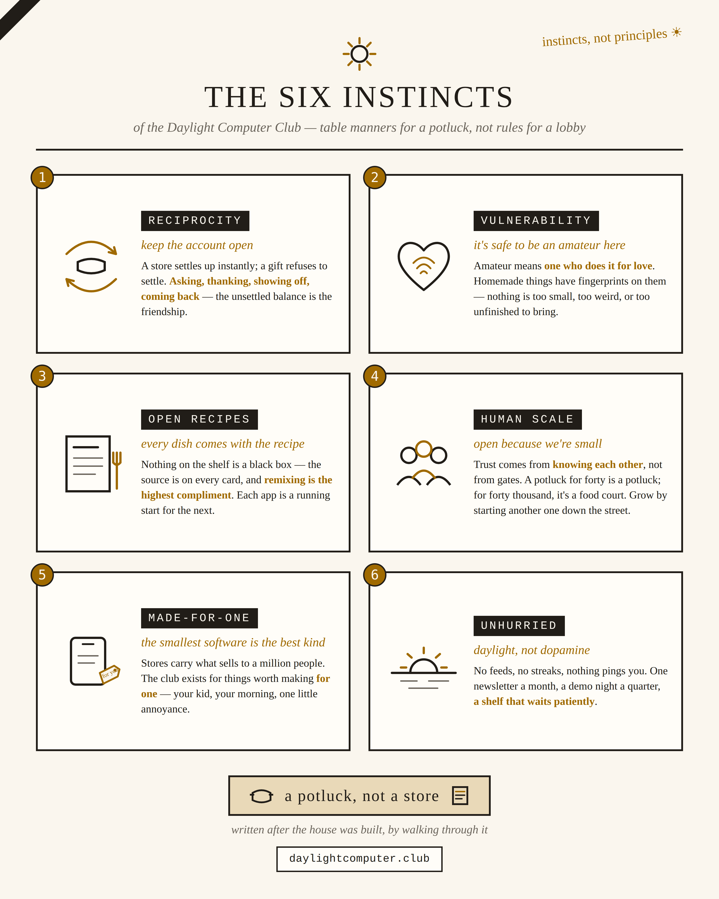

Club instincts, not club principles
Our six instincts — the things members do without thinking, that a newcomer absorbs just by hanging around.
Principles are what companies laminate and hang in lobbies. A club doesn't need those. What a club has is closer to instincts — or maybe table manners. A potluck doesn't have bylaws; it has manners: you thank the cook, you don't hoard, you bring something when you can. The Homebrew Computer Club never had a principles document either. It had a motto — "Give to help others" — and a set of habits everyone picked up by showing up. So here are ours. Six of them.
Reciprocity — keep the account open
A store settles up instantly: you pay, you're square, you owe each other nothing — and owing each other nothing is exactly why a store is cold. A gift refuses to settle. When a friend installs your app and leaves a note, they now owe you a little warmth, and you owe them a look at whatever they make next. That unsettled balance, passed back and forth forever, is the relationship. The club's whole job is to keep accounts deliciously unsettled — asking, thanking, showing off, coming back.
Already in the house: the wish board (asking) and the guestbook (thanking).
Vulnerability — it's safe to be an amateur here
"Amateur" comes from the Latin amare, to love: one who does it for love, not money. Everything on this shelf is homemade, which means it has fingerprints on it — and showing something with your fingerprints on it is showing yourself. So kindness here isn't politeness, it's infrastructure: gratitude is what makes people brave enough to bring the second dish. The club must never make anyone feel like their thing is too small, too weird, or too unfinished to bring.
Already in the house: the guestbook — a wall for kind notes, and nothing else.
Open recipes — every dish comes with the recipe
Nothing on the shelf is a black box; the source code is linked on every card, and remixing isn't stealing — it's the highest compliment. This is Homebrew's actual motto in modern clothes, and it's why the club gets collectively smarter: each app is a running start for the next one.
Already in the house: the source link and the remix button on every card.
Human scale — we can be this open because we're small
Trust here comes from knowing each other, not from gates and review queues. That's not a limitation to outgrow — it's the design. A potluck for forty is a potluck; a potluck for forty thousand is a food court. If the club ever grows, it should grow the way potlucks do: someone starts another one down the street.
Already in the house: the trusted-members list — vouched for by a friend, not vetted by a queue.
Made-for-one — the smallest software is the best kind
An app store only carries things worth selling to a million people. The club exists precisely for things worth making for one — your kid, your morning, one annoyance on one tablet. Bespoke isn't a compromise; it's the point.
Already in the house: the shelf itself — there is no bar to clear, only a dish to bring.
Unhurried — the club runs on daylight, not dopamine
No feeds, no streaks, no notifications begging you back. A monthly newsletter, a quarterly demo night, a shelf that waits patiently. The device is sunlight and paper; the club moves at the same pace.
Already in the house: one newsletter a month, and nothing that pings you. Ever.
One thing worth noticing, reading these back: every instinct above already has furniture in the club. The guestbook for vulnerability, the remix button for open recipes, the trusted-members list for human scale, the wish board for reciprocity. These aren't aspirations — they're descriptions of a thing that already exists. That's the best kind of principles-document: written after the house is built, by walking through it.
Phrases we steer by
Shorter than instincts — the sentences that settle arguments around here.
- "A potluck, not a store." — the whole club in five words.
- "Give to help others." — the Homebrew Computer Club's motto, 1975. Our inheritance.
- "Remove friction, keep consent." — installing a friend's app should take one yes, never seven — but always a yes.
- "Dumb gates, smart advice." — machines check facts and can say no; the AI briefs the human and never holds the keys.
- "Approve once, trusted forever." — vouch for a friend one time; after that their dishes land instantly.
- "You don't taste-test a friend's casserole at the door." — trusted dishes shelve first; the inspectors still stop by after.
- "The robot's job is to make sure you're never surprised — not to make sure you're never wrong." — the human is the moral authority here.
- "Bring a dish, take a dish, leave a note for the cook." — everything else is detail.
The poster version
Print it, pin it above the shelf, text it to a friend.
{kind=link}
